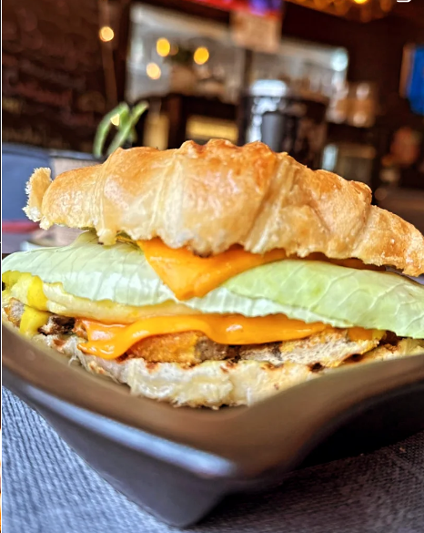

Food & drink
A sandwich worth slowing down for
A flaky croissant, fresh greens and melted cheese make this café-style bite a memorable favourite.
A glimpse inside
Explore the food, atmosphere and little details that make the Dastaan experience.

A flaky croissant, fresh greens and melted cheese make this café-style bite a memorable favourite.
A dark, bookish café mood with warm lighting and a menu of sandwiches, pasta and chicken favourites.
Sample items shown in the supplied menu image.
| Item | Listed price |
|---|---|
| Smoked Chicken Sandwich | 900 |
| Pizza Sandwich | 900 |
| Chipotle Wrap | 400 |
| Alfredo Pasta | 850 |
| Chicken Chow Mein | 800 |
Prices are transcribed from the supplied menu image and may change.
Set the mood
This sample audio player demonstrates HTML media controls. Replace the source with an audio file you have permission to use.